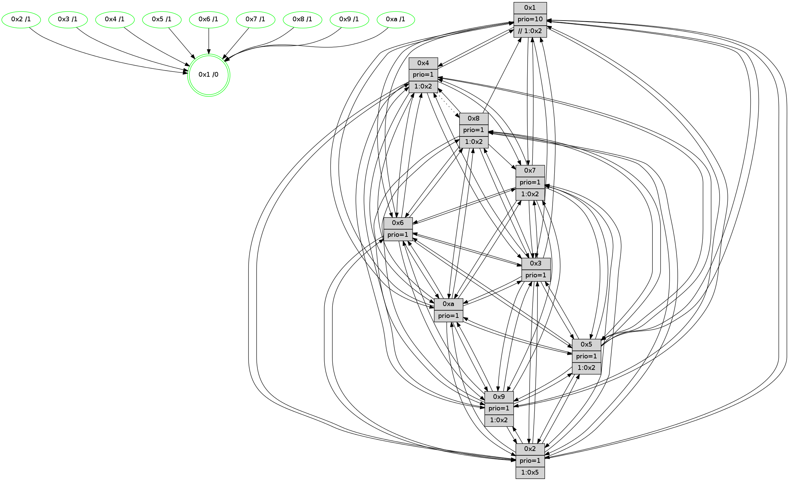

>> << IDX [start] -100 -25 -5 +0 +5 +25 +100 [1210.20963216]
 Previous packets
----------------------------------------------------------------------
1205.480841 beacon01(faad) #0 coord=01,02,03,04,05,06,07,0a,09,08 cycle=688.0ms assoc
-- color-indic=1 64 2e 9e
1205.490824 beacon02(faad) #0 coord=01,02,03,04,05,06,07,0a,09,08 cycle=688.0ms assoc 64 bd af
1205.500824 beacon03(faad) #0 coord=01,02,03,04,05,06,07,0a,09,08 cycle=688.0ms assoc 64 c7 e2
1205.510825 beacon04(faad) #0 coord=01,02,03,04,05,06,07,0a,09,08 cycle=688.0ms assoc 64 b0 08
1205.520824 beacon05(faad) #0 coord=01,02,03,04,05,06,07,0a,09,08 cycle=688.0ms assoc 64 ca 45
1205.530825 beacon06(faad) #0 coord=01,02,03,04,05,06,07,0a,09,08 cycle=688.0ms assoc 64 44 92
1205.540824 beacon07(faad) #0 coord=01,02,03,04,05,06,07,0a,09,08 cycle=688.0ms assoc 64 3e df
1205.550830 beacon0a(faad) #0 coord=01,02,03,04,05,06,07,0a,09,08 cycle=688.0ms assoc 64 4f d4
1205.560830 beacon09(faad) #0 coord=01,02,03,04,05,06,07,0a,09,08 cycle=688.0ms assoc 64 c1 03
1205.570829 beacon08(faad) #0 coord=01,02,03,04,05,06,07,0a,09,08 cycle=688.0ms assoc 64 bb 4e
1205.584301 [Hello(10): seq=702 sym=6,2,3,8,7,5,9,4,1 sysInfo=hasWarning stat=6:7,11,1,1/2:10,7,4,10/3:13,8,9,11/8:10,13,15,2/7:13,15,7,6/5:11,13,0,15/9:8,3,9,3/4:2,13,7,0/1:13,15,14,1]
1205.586986 [Color(5) seq=345 @0:0 prio=1]
1205.588300 [Hello(4): seq=769 sym=5,7,6,2,3,9,10,1 asym=8 sysInfo= stat=5:7,7,3,0/7:4,8,7,1/6:8,10,7,12/2:13,14,14,14/3:7,7,7,12/9:10,8,11,11/10:9,0,14,14/1:6,10,6,1/8:1,5,2,0]
1205.591323 [Hello(8): seq=713 sym=5,2,3,7,9,6,4,10,1 sysInfo=hasWarning stat=5:15,2,8,0/2:9,11,5,10/3:2,1,9,0/7:2,4,0,0/9:10,1,10,3/6:0,13,8,13/4:1,3,0,0/10:10,4,12,4/1:12,5,5,0]
1205.594447 [Color(8) seq=368 @0:0 prio=1 >10.@1,1.@2,1.@3,1.@4]
1205.596446 [Color(4) seq=326 @0:0 prio=1 >10.@1,1.@2,1.@3,1.@5]
1205.599265 [Hello(7): seq=769 sym=2,3,5,6,4,8,9,10,1 sysInfo=hasWarning stat=2:15,5,14,1/3:5,14,15,0/5:6,11,12,2/6:4,2,13,9/4:13,14,10,1/8:6,13,4,0/9:1,2,1,0/10:13,1,15,6/1:15,5,4,0]
1205.601688 [Hello(9): seq=713 sym=2,5,3,4,7,6,8,10,1 sysInfo=hasWarning stat=2:1,0,1,8/5:9,12,3,6/3:1,9,7,0/4:5,8,2,0/7:8,15,6,1/6:13,6,15,11/8:5,1,3,3/10:6,0,6,4/1:10,13,8,1]
1205.604842 [Color(9) seq=342 @0:0 prio=1 >10.@1,1.@2,1.@3,1.@4]
1205.609020 [Color(1) seq=450 @0:0 prio=10 >>1.@2,1.@3,1.@4]
1205.610760 [Color(7) seq=315 @0:0 prio=1 >10.@1,1.@2,1.@3,1.@4]
----------------------------------------------------------------------
1206.268972 beacon01(faad) #0 coord=01,02,03,04,05,06,07,0a,09,08 cycle=688.0ms assoc
-- color-indic=1 64 1a 86
1206.278955 beacon02(faad) #0 coord=01,02,03,04,05,06,07,0a,09,08 cycle=688.0ms assoc 64 89 b7
1206.288954 beacon03(faad) #0 coord=01,02,03,04,05,06,07,0a,09,08 cycle=688.0ms assoc 64 f3 fa
1206.298955 beacon04(faad) #0 coord=01,02,03,04,05,06,07,0a,09,08 cycle=688.0ms assoc 64 84 10
1206.308954 beacon05(faad) #0 coord=01,02,03,04,05,06,07,0a,09,08 cycle=688.0ms assoc 64 fe 5d
1206.318955 beacon06(faad) #0 coord=01,02,03,04,05,06,07,0a,09,08 cycle=688.0ms assoc 64 70 8a
1206.328955 beacon07(faad) #0 coord=01,02,03,04,05,06,07,0a,09,08 cycle=688.0ms assoc 64 0a c7
1206.338959 beacon0a(faad) #0 coord=01,02,03,04,05,06,07,0a,09,08 cycle=688.0ms assoc 64 7b cc
1206.348961 beacon09(faad) #0 coord=01,02,03,04,05,06,07,0a,09,08 cycle=688.0ms assoc 64 f5 1b
1206.358961 beacon08(faad) #0 coord=01,02,03,04,05,06,07,0a,09,08 cycle=688.0ms assoc 64 8f 56
1206.370198 [Hello(5): seq=770 sym=7,6,4,3,1,9,8,10,2 sysInfo=hasWarning stat=7:5,3,12,13/6:4,12,10,2/4:5,11,4,13/3:8,6,3,14/1:7,9,5,0/9:8,6,3,9/8:3,5,1,2/10:13,15,1,8/2:4,10,6,6]
1206.373869 [Color(10) seq=359 @0:0 prio=1]
1206.375121 [Hello(6): seq=770 sym=2,3,5,4,7,9,8,10,1 mpr= sysInfo=hasWarning stat=2:2,4,1,0/3:4,4,1,12/5:8,3,4,2/4:9,2,0,5/7:0,12,11,12/9:9,4,9,9/8:1,1,5,5/10:10,11,6,12/1:15,9,5,1]
1206.379318 [Hello(3): seq=770 sym=1,7,6,2,4,8,9,10,5 sysInfo=hasWarning stat=1:10,11,2,0/7:2,13,2,12/6:1,2,0,0/2:11,3,5,0/4:6,9,5,11/8:12,9,0,4/9:6,13,8,15/10:4,12,14,4/5:7,1,13,0]
1206.382145 [Color(3) seq=399 @0:0 prio=1]
1206.383745 [Hello(1): seq=679 sym=4,2,9,5,10,3,8,6,7 sysInfo=coloring-mode-on,ColoringModeRequestCalled stat=4:4,6,1,0/2:7,11,8,2/9:6,8,2,0/5:14,8,1,7/10:8,6,13,7/3:13,1,3,7/8:10,12,4,3/6:7,15,11,14/7:12,15,4,14]
1206.389965 [Hello(2): seq=766 sym=4,5,7,6,3,9,8,10,1 sysInfo=hasWarning stat=4:9,14,11,11/5:8,12,15,1/7:1,10,12,14/6:0,1,0,0/3:7,7,13,9/9:10,15,4,8/8:9,11,11,11/10:11,13,3,10/1:15,11,0,0]
1206.394199 [Color(6) seq=402 @0:0 prio=1]
1206.396769 [Color(2) seq=346 @0:0 prio=1 >1.@5,1.@6,1.@7,1.@8]
----------------------------------------------------------------------
1207.057103 beacon01(faad) #0 coord=01,02,03,04,05,06,07,0a,09,08 cycle=688.0ms assoc
-- color-indic=1 64 a6 83
1207.067086 beacon02(faad) #0 coord=01,02,03,04,05,06,07,0a,09,08 cycle=688.0ms assoc 64 35 b2
1207.077085 beacon03(faad) #0 coord=01,02,03,04,05,06,07,0a,09,08 cycle=688.0ms assoc 64 4f ff
1207.087086 beacon04(faad) #0 coord=01,02,03,04,05,06,07,0a,09,08 cycle=688.0ms assoc 64 38 15
1207.097087 beacon05(faad) #0 coord=01,02,03,04,05,06,07,0a,09,08 cycle=688.0ms assoc 64 42 58
1207.107085 beacon06(faad) #0 coord=01,02,03,04,05,06,07,0a,09,08 cycle=688.0ms assoc 64 cc 8f
1207.117088 beacon07(faad) #0 coord=01,02,03,04,05,06,07,0a,09,08 cycle=688.0ms assoc 64 b6 c2
1207.127090 beacon0a(faad) #0 coord=01,02,03,04,05,06,07,0a,09,08 cycle=688.0ms assoc 64 c7 c9
1207.147090 beacon08(faad) #0 coord=01,02,03,04,05,06,07,0a,09,08 cycle=688.0ms assoc 64 33 53
1207.160233 [Hello(10): seq=703 sym=6,2,3,8,7,5,9,4,1 sysInfo=hasWarning stat=6:8,12,1,1/2:11,8,4,10/3:14,9,9,11/8:11,14,15,2/7:14,0,7,6/5:12,14,0,15/9:8,4,9,3/4:3,14,7,0/1:14,0,14,1]
1207.162959 [Hello(8): seq=714 sym=5,2,3,7,9,6,4,10,1 sysInfo=hasWarning stat=5:0,2,8,0/2:10,12,5,10/3:3,2,9,0/7:3,5,0,0/9:10,2,10,3/6:1,14,8,13/4:1,4,0,0/10:11,5,12,4/1:13,6,5,0]
1207.170260 [Hello(4): seq=770 sym=5,7,6,2,3,9,10,1 asym=8 sysInfo= stat=5:8,7,3,0/7:5,9,7,1/6:9,11,7,12/2:14,15,14,14/3:8,8,7,12/9:10,9,11,11/10:10,1,14,14/1:7,11,6,1/8:1,5,2,0]
1207.172864 [Color(1) seq=451 @0:0 prio=10 >>1.@2,1.@3,1.@4]
1207.175052 [Hello(7): seq=770 sym=2,3,5,6,4,8,9,10,1 sysInfo=hasWarning stat=2:0,6,14,1/3:6,15,15,0/5:7,11,12,2/6:5,3,13,9/4:13,14,10,1/8:6,13,4,0/9:2,2,1,0/10:14,2,15,6/1:0,5,4,0]
1207.179420 [Color(9) seq=343 @0:0 prio=1 >1.@2,1.@5,1.@6,1.@7]
1207.182820 [Color(7) seq=316 @0:0 prio=1 >1.@2,1.@5,1.@6,1.@9]
1207.184747 [Color(4) seq=327 @0:0 prio=1 >1.@2,1.@5,1.@6,1.@7]
1207.191926 [Color(8) seq=369 @0:0 prio=1 >1.@2,1.@5,1.@6,1.@7]
----------------------------------------------------------------------
1207.845236 beacon01(faad) #0 coord=01,02,03,04,05,06,07,0a,09,08 cycle=688.0ms assoc
-- color-indic=1 64 62 8d
1207.855219 beacon02(faad) #0 coord=01,02,03,04,05,06,07,0a,09,08 cycle=688.0ms assoc 64 f1 bc
1207.865218 beacon03(faad) #0 coord=01,02,03,04,05,06,07,0a,09,08 cycle=688.0ms assoc 64 8b f1
1207.875218 beacon04(faad) #0 coord=01,02,03,04,05,06,07,0a,09,08 cycle=688.0ms assoc 64 fc 1b
1207.885219 beacon05(faad) #0 coord=01,02,03,04,05,06,07,0a,09,08 cycle=688.0ms assoc 64 86 56
1207.895218 beacon06(faad) #0 coord=01,02,03,04,05,06,07,0a,09,08 cycle=688.0ms assoc 64 08 81
1207.905220 beacon07(faad) #0 coord=01,02,03,04,05,06,07,0a,09,08 cycle=688.0ms assoc 64 72 cc
1207.915224 beacon0a(faad) #0 coord=01,02,03,04,05,06,07,0a,09,08 cycle=688.0ms assoc 64 03 c7
1207.925224 beacon09(faad) #0 coord=01,02,03,04,05,06,07,0a,09,08 cycle=688.0ms assoc 64 8d 10
1207.935224 beacon08(faad) #0 coord=01,02,03,04,05,06,07,0a,09,08 cycle=688.0ms assoc 64 f7 5d
1207.946774 [Hello(1): seq=680 sym=4,2,9,5,10,3,8,6,7 sysInfo=coloring-mode-on,ColoringModeRequestCalled stat=4:4,7,1,0/2:8,12,8,2/9:6,9,2,0/5:14,8,1,7/10:9,6,13,7/3:13,1,3,7/8:10,13,4,3/6:7,0,11,14/7:13,0,4,14]
1207.950443 [Hello(2): seq=767 sym=4,5,7,6,3,9,8,10,1 sysInfo=hasWarning stat=4:10,15,11,11/5:9,12,15,1/7:2,11,12,14/6:0,1,0,0/3:7,7,13,9/9:11,0,4,8/8:9,12,11,11/10:12,13,3,10/1:15,12,0,0]
1207.952979 [Hello(5): seq=771 sym=7,6,4,3,1,9,8,10,2 sysInfo=hasWarning stat=7:6,4,12,13/6:5,13,10,2/4:6,12,4,13/3:9,7,3,14/1:8,10,5,0/9:8,7,3,9/8:3,6,1,2/10:14,0,1,8/2:5,11,6,6]
1207.955685 [Hello(3): seq=771 sym=1,7,6,2,4,8,9,10,5 sysInfo=hasWarning stat=1:11,12,3,0/7:3,14,2,12/6:1,3,0,0/2:12,4,5,0/4:7,10,5,11/8:12,10,0,4/9:6,14,8,15/10:5,12,14,4/5:8,2,13,0]
1207.958497 [STC(3)->1 #0.191 tree-change,inconsistent-stability,stable,to-color d=1]
1207.960125 [Color(2) seq=347 @0:0 prio=1 >1.@5,1.@6,1.@7,1.@8]
1207.961876 [Color(3) seq=400 @0:0 prio=1]
1207.964359 [Hello(6): seq=771 sym=2,3,5,4,7,9,8,10,1 sysInfo=hasWarning stat=2:2,5,1,0/3:4,4,1,12/5:9,4,4,2/4:10,3,0,5/7:1,13,11,12/9:9,5,9,9/8:2,2,5,5/10:11,11,6,12/1:15,10,5,1]
1207.967990 [STC(10)->1 #0.191 tree-change,inconsistent-stability,stable,to-color d=1]
1207.969413 [Color(6) seq=403 @0:0 prio=1]
1207.971533 [Color(10) seq=360 @0:0 prio=1]
----------------------------------------------------------------------
1208.633366 beacon01(faad) #0 coord=01,02,03,04,05,06,07,0a,09,08 cycle=688.0ms assoc
-- color-indic=1 64 de 88
1208.643349 beacon02(faad) #0 coord=01,02,03,04,05,06,07,0a,09,08 cycle=688.0ms assoc 64 4d b9
1208.653348 beacon03(faad) #0 coord=01,02,03,04,05,06,07,0a,09,08 cycle=688.0ms assoc 64 37 f4
1208.663350 beacon04(faad) #0 coord=01,02,03,04,05,06,07,0a,09,08 cycle=688.0ms assoc 64 40 1e
1208.673349 beacon05(faad) #0 coord=01,02,03,04,05,06,07,0a,09,08 cycle=688.0ms assoc 64 3a 53
1208.683349 beacon06(faad) #0 coord=01,02,03,04,05,06,07,0a,09,08 cycle=688.0ms assoc 64 b4 84
1208.693350 beacon07(faad) #0 coord=01,02,03,04,05,06,07,0a,09,08 cycle=688.0ms assoc 64 ce c9
1208.703355 beacon0a(faad) #0 coord=01,02,03,04,05,06,07,0a,09,08 cycle=688.0ms assoc 64 bf c2
1208.713355 beacon09(faad) #0 coord=01,02,03,04,05,06,07,0a,09,08 cycle=688.0ms assoc 64 31 15
1208.723355 beacon08(faad) #0 coord=01,02,03,04,05,06,07,0a,09,08 cycle=688.0ms assoc 64 4b 58
1208.735510 [Hello(10): seq=704 sym=6,2,3,8,7,5,9,4,1 sysInfo=hasWarning stat=6:8,12,1,1/2:11,8,4,10/3:14,9,9,11/8:11,15,15,2/7:15,1,7,6/5:12,15,0,15/9:8,5,9,3/4:4,15,7,0/1:15,1,15,1]
1208.741406 [Color(9) seq=344 @0:0 prio=1 >1.@2,1.@5,1.@6,1.@7]
1208.743116 [Hello(7): seq=771 sym=2,3,5,6,4,9,10,1 sysInfo=hasWarning stat=2:1,7,14,1/3:7,0,0,0/5:8,11,12,2/6:6,4,13,9/4:13,15,10,1/9:2,2,1,0/10:15,3,0,6/1:1,5,4,0]
1208.745570 [Color(4) seq=328 @0:0 prio=1 >1.@2,1.@5,1.@6,1.@7]
1208.747685 [Color(7) seq=317 @0:0 prio=1 >1.@2,1.@5,1.@6,1.@9]
1208.749691 [Hello(8): seq=715 sym=5,2,3,7,9,6,4,10,1 sysInfo=hasWarning stat=5:1,2,8,0/2:11,13,5,10/3:4,3,10,0/7:3,5,0,0/9:10,2,10,3/6:2,15,8,13/4:1,4,0,0/10:12,6,13,4/1:14,6,5,0]
1208.753145 [Color(8) seq=370 @0:0 prio=1 >1.@2,1.@5,1.@6,1.@7]
1208.754769 [Color(5) seq=347 @0:0 prio=1 >1.@2,1.@6,1.@7,1.@8]
1208.761173 [Color(1) seq=452 @0:0 prio=10 >>1.@2,1.@3,1.@4]
----------------------------------------------------------------------
1209.421500 beacon01(faad) #0 coord=01,02,03,04,05,06,07,0a,09,08 cycle=688.0ms assoc
-- color-indic=1 64 ca e6
1209.431483 beacon02(faad) #0 coord=01,02,03,04,05,06,07,0a,09,08 cycle=688.0ms assoc 64 59 d7
1209.441482 beacon03(faad) #0 coord=01,02,03,04,05,06,07,0a,09,08 cycle=688.0ms assoc 64 23 9a
1209.451482 beacon04(faad) #0 coord=01,02,03,04,05,06,07,0a,09,08 cycle=688.0ms assoc 64 54 70
1209.461483 beacon05(faad) #0 coord=01,02,03,04,05,06,07,0a,09,08 cycle=688.0ms assoc 64 2e 3d
1209.471481 beacon06(faad) #0 coord=01,02,03,04,05,06,07,0a,09,08 cycle=688.0ms assoc 64 a0 ea
1209.481484 beacon07(faad) #0 coord=01,02,03,04,05,06,07,0a,09,08 cycle=688.0ms assoc 64 da a7
1209.491488 beacon0a(faad) #0 coord=01,02,03,04,05,06,07,0a,09,08 cycle=688.0ms assoc 64 ab ac
1209.501487 beacon09(faad) #0 coord=01,02,03,04,05,06,07,0a,09,08 cycle=688.0ms assoc 64 25 7b
1209.511488 beacon08(faad) #0 coord=01,02,03,04,05,06,07,0a,09,08 cycle=688.0ms assoc 64 5f 36
1209.522790 [Hello(1): seq=681 sym=4,2,9,5,10,3,6,7 sysInfo=coloring-mode-on,ColoringModeRequestCalled stat=4:4,7,1,0/2:9,13,8,2/9:6,9,2,0/5:15,8,1,7/10:10,7,14,7/3:14,2,4,7/6:8,1,11,14/7:13,0,4,14]
1209.526033 [Hello(5): seq=772 sym=7,6,4,3,1,9,8,10,2 sysInfo=hasWarning stat=7:6,4,12,13/6:6,14,10,2/4:6,12,4,13/3:10,8,4,14/1:8,11,5,0/9:8,7,3,9/8:3,6,1,2/10:15,1,2,8/2:5,12,6,6]
1209.528761 [Hello(3): seq=772 sym=1,7,6,2,4,8,9,10,5 sysInfo=hasWarning stat=1:12,13,3,0/7:4,15,2,12/6:2,4,0,0/2:12,4,5,0/4:7,11,5,11/8:13,11,0,4/9:7,15,8,15/10:6,13,15,4/5:8,3,13,0]
1209.532407 [Hello(6): seq=772 sym=2,3,5,4,7,9,8,10,1 sysInfo=hasWarning stat=2:2,5,1,0/3:4,4,1,12/5:9,5,4,2/4:10,4,0,5/7:2,14,11,12/9:9,6,9,9/8:3,3,5,5/10:12,12,6,12/1:0,11,5,1]
1209.535557 [Color(3) seq=401 @0:0 prio=1]
1209.538904 [Hello(2): seq=768 sym=4,5,7,6,3,9,8,10,1 sysInfo=hasWarning stat=4:11,0,11,11/5:9,13,15,1/7:3,12,12,14/6:1,2,0,0/3:7,8,13,9/9:11,1,4,8/8:10,13,11,11/10:13,14,4,10/1:0,13,0,0]
1209.541717 [Color(2) seq=348 @0:0 prio=1 >1.@5,1.@6,1.@7,1.@8]
1209.543373 [Color(10) seq=361 @0:0 prio=1]
1209.546716 [Color(6) seq=404 @0:0 prio=1]